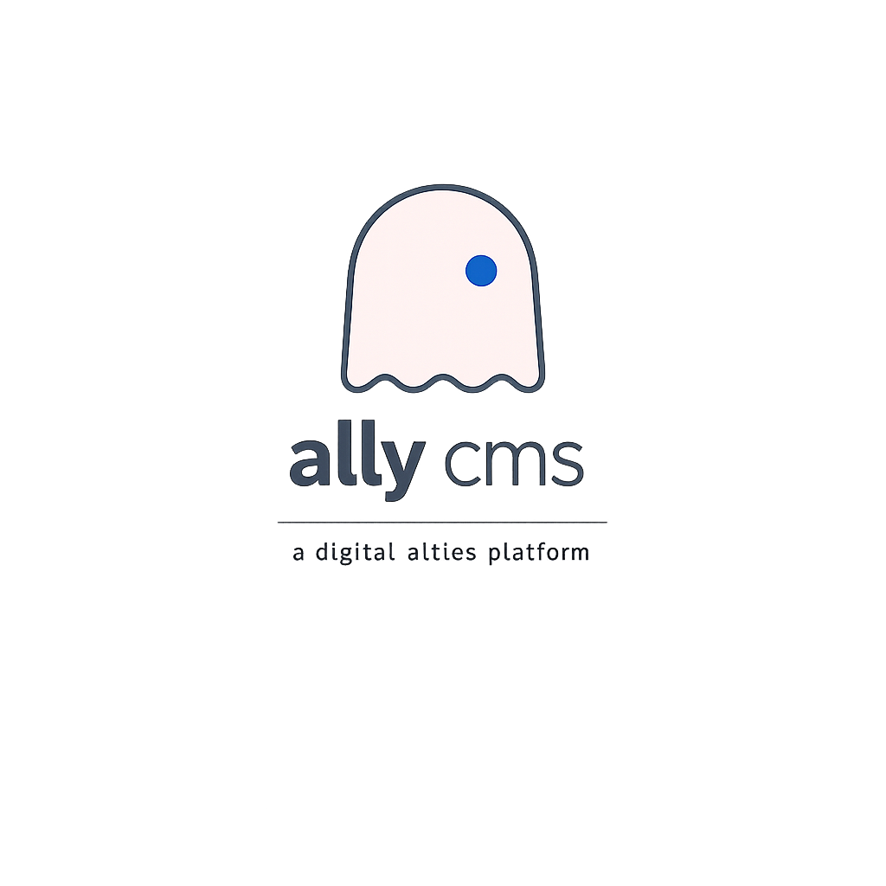
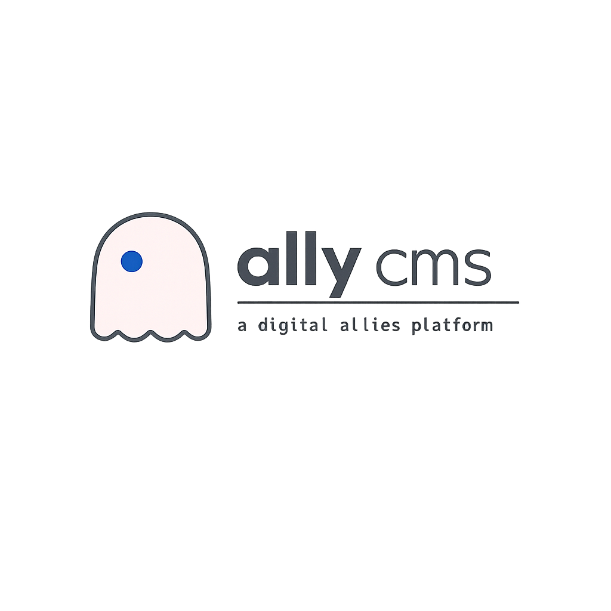

Ghost mark with off-center blue dot + product name. Two primary lock-ups for flexible application.


The blue dot (eye) has a subtle pulse animation that repeats continuously. Spec: 2s duration, easing ease-in-out, opacity from 100% → 60% → 100%. Creates a "blinking" or "alive" effect. Applies when ghost is used as a loading indicator, on login page, or in interactive contexts. Static/no animation in smaller icon contexts (favicon, nav).
Use ghost mark on dark backgrounds (add white outline if needed). Place logo with breathing room—minimum 12px clear space on all sides. Scale proportionally. Use the pink + blue color combination consistently. Apply pulse animation to eye in interactive/loading states.
Do not change the ghost's proportions or rotation. Do not recolor the ghost or blue dot. Do not remove the dot or alter its position. Do not use in contexts where the ghost mark cannot be clearly seen (e.g., very small sizes below 32px).